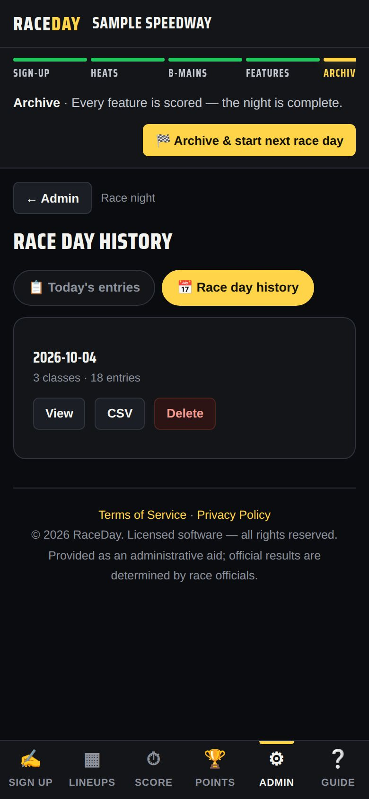
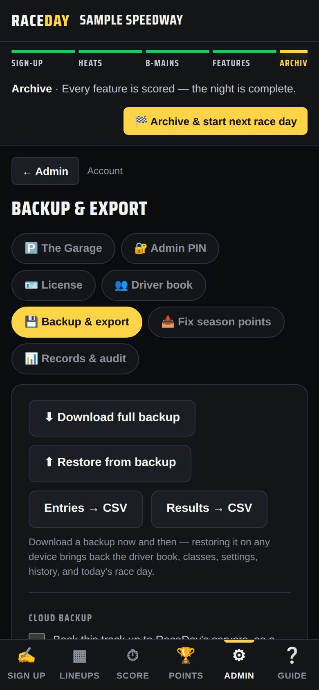

-
Check every feature is scored
The Race Control bar should say “Every feature is scored — the night is complete.” If a feature isn't finished, RaceDay warns you before archiving — those classes' points won't count, so tap Cancel and finish them first.

The night is complete -
Archive and start the next race day
Tap 🏁 Archive & start next race day and confirm. Tonight's entries and results move to Race day history and the board clears. Your driver book and classes stay.
-
Download a backup
RaceDay asks “Back up first?” — tap OK to save a backup file. Keep it somewhere safe (email it to yourself). If this device is ever lost or wiped, that file brings the whole season back.
-
Share results with Driven
Next it offers to share tonight's results with Driven, so drivers' career stats update. Tap OK to share now, or Cancel to be reminded later.
-
Check the history
Admin → Race night → Race day history lists every archived night. View shows it, CSV exports it, Delete removes it.

Race day history -
Turn on cloud backup
In Admin → Account → Backup & export, tick the cloud backup box and RaceDay keeps an off-device copy for you. ☁ Back up now runs one immediately. Your PIN and license are never uploaded.

Backup & export -
Missed a night? Fix season points
Started mid-season, or ran a night without the app? Admin → Account → Fix season points lets you add that night's points by hand. See Season points.

Fix season points -
Next week
When you open RaceDay on a new day it offers Start today's race day. In Admin → Today's entries, ↻ Re-enter last race day's field brings last week's drivers back with fresh pill draws.

Today's entries
Good to know
- History keeps your last 60 race days.
- If you haven't downloaded a backup in 30 days, RaceDay reminds you.
- Restoring a backup never moves a license — each device keeps its own.
Next guides
Still stuck? The Field Manual walks through every screen, and the FAQ covers common questions. Or just ask.
Email a question →